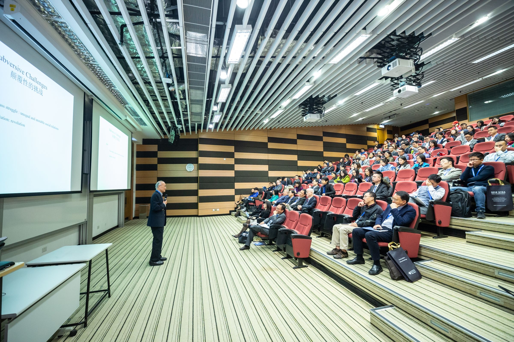

News & Events
協會消息
協會公告、課程講座與產業參與紀錄。

焦點訊息2026 年度大會暨 IR 新溝通時代
邁入 2026 年，TIRI 將以「IR 新溝通時代」為大會主題，呼應股東行動主義、散戶影響力提升與 AI 帶來的互動變革。本屆大會邀集國內外產官學專家，聚焦「從資訊揭露到價值對話」，期盼攜手企業探討創新溝通策略，深化投資人的長期信任，共創企業長遠價值。
Event Archive
歷年活動紀錄
08.072026
AI 時代的領導人影響力建構：從個人聲量到全球信任資產
07.242026家族企業的治理與傳承：家族憲章、股權控制與家族信託的法律架構
07.172026台廠的歐盟數位供應鏈合規法遵挑戰與對策
07.152026公司治理再進化：AI驅動治理效能與價值提升
07.092026從曝光到影響力：出海布局下的全球溝通策略與 AI 時代的企業價值塑造
06.122026證券不法案例與董監責任
06.092026IFRS 18 新準則之影響與實務解析
06.032026永續供應鏈與盡職調查：從合規到競爭力的轉型策略
05.282026線上說明會 - TIRIC 2026 IR 專業實戰班
05.222026化解永續焦慮! 看懂未來十年ESG大趨勢
05.152026TIRI 台灣投資人關係協會- 05/15 IR專業交流晚宴
05.152026台灣資本市場簡介
05.082026面對國際新情勢，台灣的機遇與挑戰
04.242026AI與新興科技應用案例
04.172026AI 與機器學習(ML)的價值創造：把技術變成企業的獲利引擎
04.092026董事會如何掌握另類投資的風險與機會
04.082026下一場產業革命：無人載具如何重塑國家安全與全球供應鏈
03.242026如何從財報發現企業經營弊端
03.062026公司治理與新版ESG評鑑之因應
01.162026董事會視角的永續報告書：從監督到價值創造的治理實務
12.182025說出永續價值：ESG故事力與銀齡策略
12.052025從 AI 浪潮看 2026 資安挑戰與治理策略
11.212025家族傳承稅務新觀念
11.072025Stakeholder Engagement and Relationship Management
10.232025_TIRI 2025年度大會暨引領IR智慧新時代
10.172025公司治理新時代的領袖資產管理
10.082025企業數位轉型—AI與新興科技應用案例
10.032025企業轉型新思維：數位科技與永續發展
09.262025Just Say No！職場侵害OUT，DEI職場IN──法說、學說、務實說之職場不法侵害（性騷擾＋職場霸凌）案例解析與預防舉措
09.172025公司治理與證券法規
08.292025台湾において日本人取締役・監査役が認識すべき税務リスク
08.222025企業、投資人、媒體三贏的新聞溝通策略
08.212025投資人與經理人需知暨台灣資本市場簡介
08.062025在台企業における日本人取締役・監査役が留意すべき法的ポイント
07.252025企業的社會影響力：從觀念到行動
07.102025公司治理新近實務案例分析 (含性別平等工作法)
06.272025未來思考導向的策略規劃
06.242025全球永續價值鏈論壇：供應鏈淨零的策略與實踐
06.192025IR全球化：媒體策略與新聞新機遇
06.132025企業在AI轉型中的領先策略
05.232025企業公關與危機溝通
05.162025TIRI 台灣投資人關係協會- 05/16 IR專業交流晚宴
05.092025贏在資本市場：投資人關係創造企業價值的秘密武器
04.232025全球秩序變遷下台灣的未來
03.282025ESG 與品牌溝通
03.252025迎戰 AI 變革與資安風險，企業如何走向新時代？
03.212025深度節能與深度減量
02.2120252025年投資展望策略暨高階管理者的勞動法實務指南分享
02.212025企業永續-從焦慮到策略
12.132024職場性騷擾防治
12.1020242025新機遇：AI與永續轉型的雙重挑戰
11.292024漫談資安治理的盲點與對策
11.222024日本企業による台湾におけるM&A（企業の合併・買収）の法的概念を解説
11.152024日本企業が台湾に投資する際に注意すべき法律・税金問題
11.122024企業永續策略與投資人關係
10.182024品牌溝通與利害關係人管理
09.202024營業秘密及資訊安全實務與證券法規
09.122024TIRI X 鴻海【面對股東行動主義必學的四大心法】
08.302024嵌入永續架構的循環經濟：從循環經濟國際規範到農業與工業的交付整合
07.312024TIRI 台灣投資人關係協會- 7/31 IR專業交流晚宴
06.212024資產傳承與節稅的布局
05.242024美中台強力對抗下的台商未來
04.192024國內外併購實務大解析
03.222024台灣再生能源市場暨綠色金融現況及趨勢
02.232024企業績效提升的密碼-成本分析與綠色供應鏈
12.2220232023年新版公司治理暨董事會績效評鑑實務解析
12.152023企業面對永續投資的溝通管理
11.242023如何用 Excel進行企業估值及IR工作管理
10.202023如何運用智慧財產權管理制度提升公司治理
09.262023輿論共振-投資人關係、媒體、政府的合作之道
09.172023企業金融好夥伴 - 全國農業金庫的企金和農貸
09.142023台灣企業併購實務
08.172023受控外國企業(CFC)&全球反避稅
08.132023景氣循環和股市投資★可申報董事、公司治理主管進修時數
08.092023數位世代下的危機處理★可申報董事、公司治理主管進修時數
07.312023數位經濟時代，企業如何創新，突破獲利能力
06.302023媒體經營與危機管理 系列
05.282023疫後振興特別預算補助企業創新轉型計畫
05.262023董監事(含獨立)、公司治理主管進修「從股東行動主義看ESG發展趨勢」
05.192023落實投資人關係 收穫IR證照
04.142023中國政經新情勢-企業如何因應美中台關係的變化
04.102023中國政經新情勢-企業如何因應美中台關係的變化
12.212022董監事(含獨立)、公司治理主管進修「營業秘密保護大作戰」
12.072022董監事(含獨立)、公司治理主管進修「財務報告責任與風險管理」
11.292022董監事(含獨立)、公司治理主管進修「數位化趨勢下的家族企業傳承策略」
11.252022董監事(含獨立)、公司治理主管進修「台灣企業併購實務」
10.252022董監事(含獨立)、公司治理主管進修 「董事會該關心的ESG核心議題」
10.192022董監事(含獨立)、公司治理主管進修 「我國永續發展債券發展與實務分享」
10.172022TIRI X 台灣證交所 X CMoney
09.302022IRO對資本市場的觀念重塑
09.142022~9/16 IR實務系列課程 （本課程符合董監事(含獨立)、公司治理主管進修）
09.072022董監事(含獨立)、公司治理主管進修 「全球最低稅負之國內應對策略」
08.262022機構投資者如何對企業估值
08.222022董監事(含獨立)、公司治理主管進修 永續金融及投資ESG化趨勢
08.192022董監事(含獨立)、公司治理主管進修 「斷鏈還是鍛煉？危機如何變轉機？」
08.182022董監事(含獨立)、公司治理主管進修 「企業永續經營－完美接班與資產傳承實務解析」
08.102022董監事(含獨立)、公司治理主管進修 「淨零碳排跨域管理實務」
08.052022企業IR實務及IRO工作解析
07.202022董監事(含獨立)、公司治理主管進修 「商業法院對董事會運作及董事執行職務之影響」
07.152022董監事(含獨立)、公司治理主管進修 「ESG的趨勢及疫情環境談全球及台灣稅制改革及企業稅務治理」
07.062022董監事(含獨立)、公司治理主管進修 「智慧財產權管理-智財訴訟實務」
06.222022董監事(含獨立)、公司治理主管進修 「審計與薪酬委員會之運作實務」
05.2320225月董監事（含獨立）、公司治理主管進修
01.182022企業如何執行低碳ESG轉型計畫？
12.28202112月董監事（含獨立）、公司治理主管進修
11.26202111月董監事（含獨立）、公司治理主管進修
10.21202110月董監事（含獨立）、公司治理主管進修
09.3020219月董監事（含獨立）、公司治理主管進修
08.2720218月董監事（含獨立）、公司治理主管進修
07.2920217月董監事（含獨立）、公司治理主管進修
05.2820215~6月董監事（含獨立）、公司治理主管進修
05.042021TIRI講座－ESG及董事會績效評估最佳實務
03.242021上市櫃公司專業經理人必上的十堂課
12.29202012月董監事（含獨立）、公司治理主管進修
10.21202010~11月董監事（含獨立）、公司治理主管進修
09.012020從IR走進企業決策層
07.2220207~9月董監事（含獨立）、公司治理主管進修
05.1520205、6月 董監事(含獨立)、公司治理主管進修 系列課程
04.242020完美危機處理SOP
03.242020透過媒體及資本市場打造企業價值（已取消）
12.3120199～12 月投資人關係實務課程
11.202019
10.252019
TIRI 與竹科管理局共同推動 IR 專業
智財管理新思惟-運用AI智能平台協助智財管理（已停辦）
10.172019藝術品欣賞與投資講座
10.072019從企業社會責任（CSR）中發現公司價值
09.192019
簡世雄、黃英記理事代表參加證交所「強化機構投資人盡職治理與上市公司投資人關係」論壇
09.012019
08.232019
4 天 3 夜免費韓國機票、住宿、翻譯
董事會股東會完全解析課程
07.312019董事資訊權與公司配合義務之範圍及實務分析
07.312019國內外併購實務大解析／ESG、年報雙語化趨勢與重要性
07.292019公司治理人員的權責與挑戰
07.172019董事資訊權
06.262019
05.302019
新興市場崛起中的越南：台商面向資本市場更要強化投資人關係
雙主題講座：新媒體時代的思維／成功發言系列
04.152019
TIRI 受邀擔任證交所「股權到經營權，IR 核心策略座談會」分享嘉賓
03.292019
TIRI 受邀擔任 MZ Asia「IR 說明會」開幕致詞嘉賓
03.152019
TIRI 受邀出席集保「投資人關係整合平台」成立大會
12.312018
台灣資本市場 IR 與國際接軌
10.232018
紐約證交所、美國 IR 協會高層來台參加 TIRI 年度大會暨大師論壇
09.112018
台灣投資人關係協會推專業 IR 獲證交所肯定
06.222018
通過內政部核准立案
05.302018